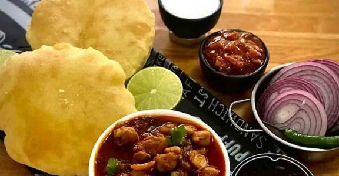

<!DOCTYPE html>
<html lang="en">
<head>
    <meta charset="UTF-8">
    <meta http-equiv="X-UA-Compatible" content="IE=edge">
    <meta name="viewport" content="width=device-width, initial-scale=1.0">
    <title>Food website</title>
    <link rel="shortcut icon" type="image" href="imagesfoods/preview-removebg-preview.png">
 
    <!-- font awesome cdn link  -->
    <link rel="stylesheet" href="https://cdnjs.cloudflare.com/ajax/libs/font-awesome/5.15.4/css/all.min.css">
 
    <link rel="stylesheet" href="https://unpkg.com/swiper@7/swiper-bundle.min.css" />
 
    <link rel="stylesheet" href="https://cdnjs.cloudflare.com/ajax/libs/lightgallery-js/1.4.0/css/lightgallery.min.css">
 
    <!-- custom css file link  -->
    <link rel="stylesheet" href="stylefoods.css">

    
</body>
</html>


<section class="header">

    <a href="#" class="logo"> <i class="fas fa-utensils" ></i> FOODIE </a>
 
    <nav class="navbar">
      <a href="foods.html" >home</a>
      <a href="FOOD_2.html" >about</a>  
      <!-- ABOUT PAGE -->
      <!-- <a href="FOOD_3.html" >food</a> -->
      <!-- FOOD PAGE -->
      <a href="FOOD_4.html" >gallery</a>
      <!-- #gallery -->
      <a href="FOOD_5.html" >menu</a>
      <!-- #menu -->
      <a href="FOOD_6.html" target="_blank">order</a>
      <!-- #order -->
      <a href="BOLGS.html" >blogs</a> 
         <!-- BLOGs-->
  </nav>
 
    <div id="menu-btn" class="fas fa-bars"></div>
 
 </section>
<!-- third page aman -->

<section class="food" id="food">

    <div class="heading">  
       <span>popular dishes</span>
       <h3>our delicious food</h3>
    </div>
 
    <div class="swiper food-slider">
 
       <div class="swiper-wrapper">
 
          <div class="swiper-slide slide" data-name="food-1">
             
             <h3>PAV BHAJI</h3>
             <div class="price">RS 100</div>
          </div>
 
          <div class="swiper-slide slide" data-name="food-2">
             
             <h3>PANI PURI</h3>
             <div class="price">Rs 50/8 PC</div>
          </div>
 
          <div class="swiper-slide slide" data-name="food-3">
             
             <h3>CHOLE Bhature</h3>
             <div class="price">RS 120</div>
          </div>
 
          <div class="swiper-slide slide" data-name="food-4">
             
             <h3>ALOO TIKKI</h3>
             <div class="price">RS 70</div>
          </div>
 
          <div class="swiper-slide slide" data-name="food-5">
             
             <h3>SOUTH INDIAN DOSA</h3>
             <div class="price">RS 110</div>
          </div>
 
          <div class="swiper-slide slide" data-name="food-6">
             
             <h3>JALEBI</h3>
             <div class="price">RS 360/KG </div>
          </div>
 
       </div>
 
       <div class="swiper-pagination"></div>
 
    </div>
 
 </section>
 
 <!-- food section ends -->
 
 <!-- food preview section starts  -->
 
 <section class="food-preview-container">
 
    <div id="close-preview" class="fas fa-times"></div>
 
    <div class="food-preview" data-target="food-1">
       
       <h3>pav-bhaji</h3>
       <div class="stars">
          <i class="fas fa-star"></i>
          <i class="fas fa-star"></i>
          <i class="fas fa-star"></i>
          <i class="fas fa-star"></i>
          <i class="fas fa-star"></i>
       </div>
       <p>Pav bhaji is a fast food dish from India consisting of a thick vegetable curry served with a soft bread roll. Its origins are in the state of Maharashtra.</p>
       <div class="price">Rs 100</div>
       <a href="#" class="btn">Buy now</a>
    </div>
 
    <div class="food-preview" data-target="food-2">
       
       <h3>Pani-Puri</h3>
       <div class="stars">
          <i class="fas fa-star"></i>
          <i class="fas fa-star"></i>
          <i class="fas fa-star"></i>
          <i class="fas fa-star"></i>
          <i class="fas fa-star"></i>
       </div>
       <p>Panipuri, phuchka, gupchup, golgappa, or pani ke patashe is a type of snack originating in the Indian Subcontinent, where it is an extremely common street food.</p>
       <div class="price">Rs 50/8 PC</div>
       <a href="#" class="btn">Buy now</a>
    </div>
 
    <div class="food-preview" data-target="food-3">
       
       <h3>chole Bhature</h3>
       <div class="stars">
          <i class="fas fa-star"></i>
          <i class="fas fa-star"></i>
          <i class="fas fa-star"></i>
          <i class="fas fa-star"></i>
          <i class="fas fa-star"></i>
       </div>
       <p>Chole bhature is a food dish popular in the Northern areas of the Indian subcontinent.Although it is known as a typical Punjabi dish, It is originally a culinary dish of Delhi and Uttar Pradesh.</p>
       <div class="price">Rs 120</div>
       <a href="#" class="btn">Buy now</a>
    </div>
 
    <div class="food-preview" data-target="food-4">
       
       <h3>chole-tikki</h3>
       <div class="stars">
          <i class="fas fa-star"></i>
          <i class="fas fa-star"></i>
          <i class="fas fa-star"></i>
          <i class="fas fa-star"></i>
          <i class="fas fa-star"></i>
       </div>
       <p>Aloo tikki, also known as aloo ki tikkia, aloo ki tikki or alu tikki, is a snack originating from the Indian subcontinent.It is made of boiled potatoes, peas, and various curry spices. </p>
       <div class="price">RS 70</div>
       <a href="#" class="btn">Buy now</a>
    </div>
 
    <div class="food-preview" data-target="food-5">
       
       <h3>dosa</h3>
       <div class="stars">
          <i class="fas fa-star"></i>
          <i class="fas fa-star"></i>
          <i class="fas fa-star"></i>
          <i class="fas fa-star"></i>
          <i class="fas fa-star"></i>
       </div>
       <p>A dosa, also called dosai, dosey, or dosha is a thin pancake in South Indian cuisine made from a fermented batter of ground black lentils and rice. Dosas are popular in South Asia as well as around the world. Dosas are served hot, often with chutney and sambar.</p>
       <div class="price">RS 110</div>
       <a href="#" class="btn">buy now</a>
    </div>
 
    <div class="food-preview" data-target="food-6">
       
       <h3>Jalebi</h3>
       <div class="stars">
          <i class="fas fa-star"></i>
          <i class="fas fa-star"></i>
          <i class="fas fa-star"></i>
          <i class="fas fa-star"></i>
          <i class="fas fa-star"></i>
       </div>
       <p>Jalebi, is a popular sweet snack in south and west Asia, Africa, and Mauritius. It goes by many names, including jilapi, zelepi, jilebi, jilipi, zulbia, jerry, mushabak, z’labia, or zalabia</p>
       <div class="price">RS 360/KG </div>
       <a href="#" class="btn">Buy now</a>
    </div>
 </section>

 
</section >
<section class= "footer">
   <div class="credit"> Created by <span>AMAN RANJAN</span>  </div>

</section>

</head>
<body>
 <!-- food preview section ends -->
 
 <!-- gallery section starts  -->
 
 